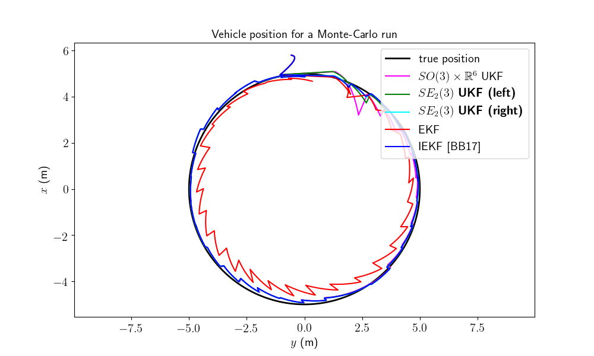
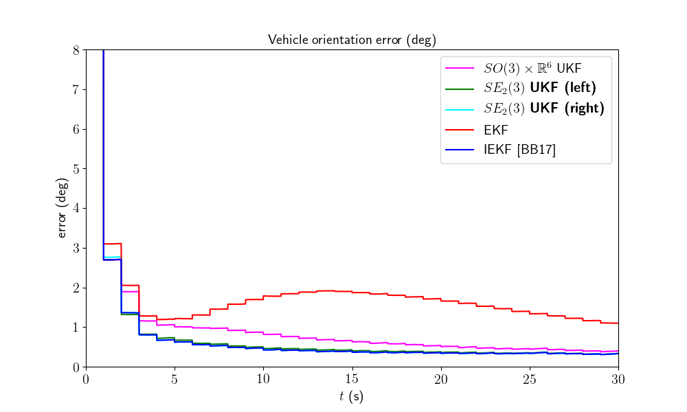
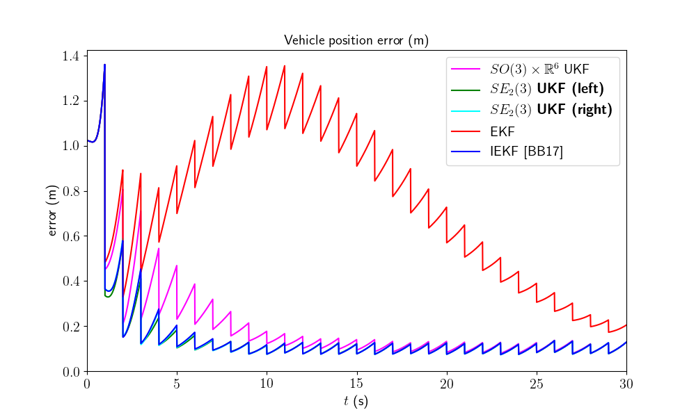
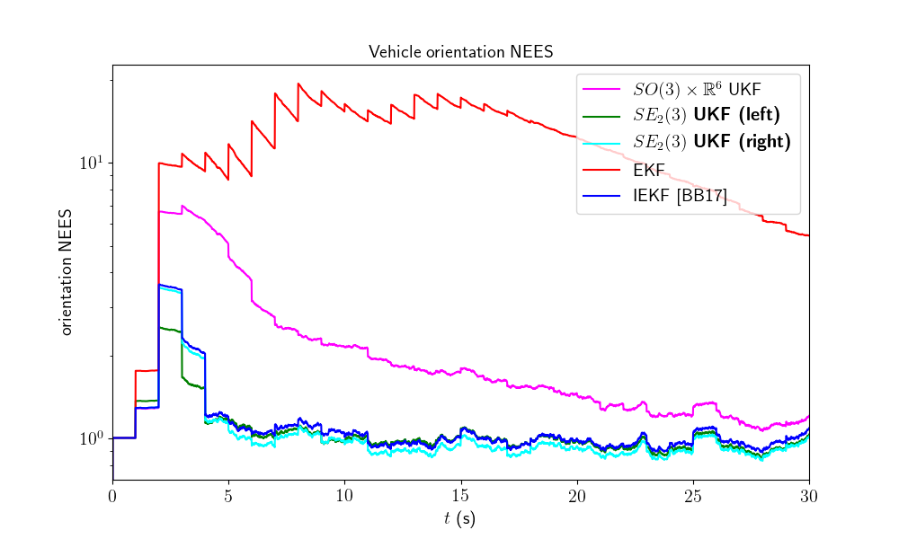
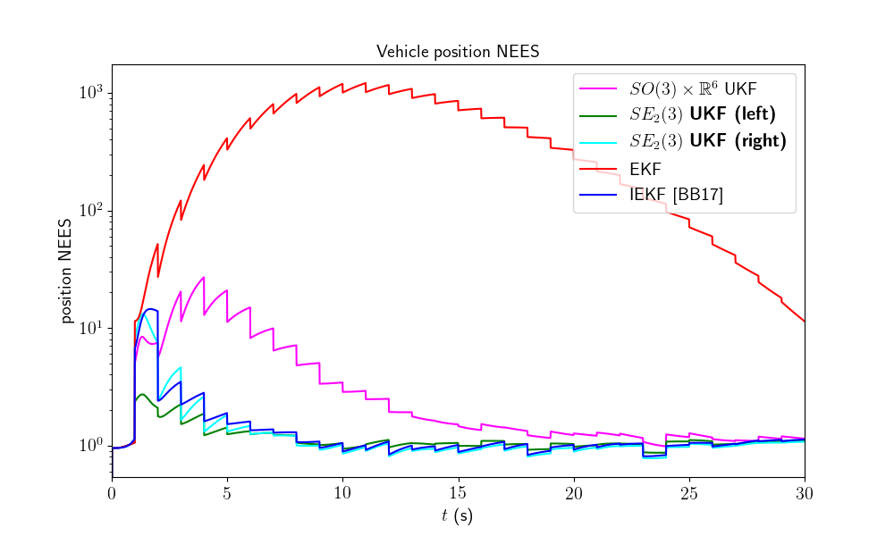

Note
Click here to download the full example code
Navigation on Flat Earth - Benchmark¶
Goals of this script:
implement different UKFs on the navigation on flat Earth example.
design the Extended Kalman Filter (EKF) and the Invariant Extended. Kalman Filter (IEKF) [BB17].
compare the different algorithms with Monte-Carlo simulations.
We assume the reader is already familiar with the considered problem described in the related example.
This script searches to estimate the 3D attitude, the velocity, and the position of a rigid body in space from inertial sensors and relative observations of points having known locations. For the given problem, three different UKFs emerge, defined respectively as:
The state is embedded in \(SO(3) \times \mathbb{R}^6\), i.e.
the retraction \(\varphi(.,.)\) is the \(SO(3)\) exponential for orientation, and the vector addition for robot velocity and position.
the inverse retraction \(\varphi^{-1}(.,.)\) is the \(SO(3)\) logarithm for orientation and the vector subtraction for velocity and position.
The state is embedded in \(SE_2(3)\) with left multiplication, i.e.
the retraction \(\varphi(.,.)\) is the \(SE_2(3)\) exponential, where the state multiplies on the left the uncertainty \(\boldsymbol{\xi}\).
the inverse retraction \(\varphi^{-1}(.,.)\) is the \(SE_2(3)\) logarithm.
The state is embedded in \(SE_2(3)\) with right multiplication, i.e.
the retraction \(\varphi(.,.)\) is the \(SE_2(3)\) exponential, where the state multiplies on the right the uncertainty \(\boldsymbol{\xi}\).
the inverse retraction \(\varphi^{-1}(.,.)\) is the \(SE_2(3)\) logarithm.
this right UKF corresponds to the Invariant Extended Kalman Filter (IEKF) recommended in [BB17].
Note
The exponential and logarithm of \(SE_2(3)\) are quickly derived from the \(SE(3)\) exponential and logarithm, see Lie Groups documentation.
Import¶
from ukfm import SO3, UKF, EKF
from ukfm import INERTIAL_NAVIGATION as MODEL
from scipy.linalg import block_diag
import numpy as np
import matplotlib
import ukfm
ukfm.set_matplotlib_config()
Simulation Setting¶
We compare the filters on a large number of Monte-Carlo runs.
# Monte-Carlo runs
N_mc = 100
The vehicle drives a 10-meter diameter circle in 30 seconds and observes three features every second while receiving high-frequency inertial measurements (100 Hz).
# sequence time (s)
T = 30
# IMU frequency (Hz)
imu_freq = 100
# create the model
model = MODEL(T, imu_freq)
# observation frequency (Hz)
obs_freq = 1
# IMU noise standard deviation (noise is isotropic)
imu_std = np.array([0.01, # gyro (rad/s), not 0.6 deg/s
0.01]) # accelerometer (m/s^2)
# observation noise standard deviation (m)
obs_std = 0.1
Filter Design¶
Additionally to the three UKFs, we compare them to an EKF and an IEKF. The EKF has the same uncertainty representation as the UKF with \(SO(3) \times \mathbb{R}^6\) uncertainty representation, whereas the IEKF has the same uncertainty representation as the UKF with right \(SE_2(3)\) retraction. As we have five similar methods, the code is redundant.
All the filters have the same parameters.
# propagation noise covariance matrix
Q = block_diag(imu_std[0]**2*np.eye(3), imu_std[1]**2*np.eye(3))
# measurement noise covariance matrix
R = obs_std**2 * np.eye(3*model.N_ldk)
# initial uncertainty matrix such that the state is not perfectly initialized
Rot0_std = 15/np.sqrt(3)*np.pi/180
p0_std = 1/np.sqrt(3)
P0 = block_diag(Rot0_std**2*np.eye(3), np.zeros((3, 3)), p0_std**2 * np.eye(3))
# sigma point parameter
alpha = np.array([1e-3, 1e-3, 1e-3])
We set variables for recording metrics before launching Monte-Carlo simulations.
ukf_err = np.zeros((N_mc, model.N, 9))
left_ukf_err = np.zeros_like(ukf_err)
right_ukf_err = np.zeros_like(ukf_err)
iekf_err = np.zeros_like(ukf_err)
ekf_err = np.zeros_like(ukf_err)
ukf_nees = np.zeros((N_mc, model.N, 2))
left_ukf_nees = np.zeros_like(ukf_nees)
right_ukf_nees = np.zeros_like(ukf_nees)
iekf_nees = np.zeros_like(ukf_nees)
ekf_nees = np.zeros_like(ukf_nees)
Monte-Carlo Runs¶
We run the Monte-Carlo through a for loop.
for n_mc in range(N_mc):
print("Monte-Carlo iteration(s): " + str(n_mc+1) + "/" + str(N_mc))
# simulate true states and noisy inputs
states, omegas = model.simu_f(imu_std)
# simulate measurements
ys, one_hot_ys = model.simu_h(states, obs_freq, obs_std)
# initialize filters
state0 = model.STATE(
Rot=states[0].Rot.dot(SO3.exp(Rot0_std*np.random.randn(3))),
v=states[0].v,
p=states[0].p + p0_std*np.random.randn(3))
# IEKF and right UKF covariance need to be turned
J = np.eye(9)
J[6:9, :3] = SO3.wedge(state0.p)
right_P0 = J.dot(P0).dot(J.T)
ukf = UKF(state0=state0, P0=P0, f=model.f, h=model.h, Q=Q, R=R,
phi=model.phi, phi_inv=model.phi_inv, alpha=alpha)
left_ukf = UKF(state0=state0, P0=P0, f=model.f, h=model.h, Q=Q, R=R,
phi=model.left_phi, phi_inv=model.left_phi_inv, alpha=alpha)
right_ukf = UKF(state0=state0, P0=P0, f=model.f, h=model.h, Q=Q, R=R,
phi=model.right_phi, phi_inv=model.right_phi_inv,
alpha=alpha)
iekf = EKF(model=model, state0=state0, P0=right_P0, Q=Q, R=R,
FG_ana=model.iekf_FG_ana, H_ana=model.iekf_H_ana,
phi=model.right_phi)
ekf = EKF(model=model, state0=state0, P0=right_P0, Q=Q, R=R,
FG_ana=model.ekf_FG_ana, H_ana=model.ekf_H_ana,
phi=model.phi)
ukf_states = [state0]
left_ukf_states = [state0]
right_ukf_states = [state0]
iekf_states = [state0]
ekf_states = [state0]
ukf_Ps = np.zeros((model.N, 9, 9))
left_ukf_Ps = np.zeros_like(ukf_Ps)
right_ukf_Ps = np.zeros_like(ukf_Ps)
ekf_Ps = np.zeros_like(ukf_Ps)
iekf_Ps = np.zeros_like(ukf_Ps)
ukf_Ps[0] = P0
left_ukf_Ps[0] = P0
right_ukf_Ps[0] = right_P0
ekf_Ps[0] = P0
iekf_Ps[0] = right_P0
# measurement iteration number
k = 1
# filtering loop
for n in range(1, model.N):
# propagation
ukf.propagation(omegas[n-1], model.dt)
left_ukf.propagation(omegas[n-1], model.dt)
right_ukf.propagation(omegas[n-1], model.dt)
iekf.propagation(omegas[n-1], model.dt)
ekf.propagation(omegas[n-1], model.dt)
# update only if a measurement is received
if one_hot_ys[n] == 1:
ukf.update(ys[k])
left_ukf.update(ys[k])
right_ukf.update(ys[k])
iekf.update(ys[k])
ekf.update(ys[k])
k += 1
# save estimates
ukf_states.append(ukf.state)
left_ukf_states.append(left_ukf.state)
right_ukf_states.append(right_ukf.state)
iekf_states.append(iekf.state)
ekf_states.append(ekf.state)
ukf_Ps[n] = ukf.P
left_ukf_Ps[n] = left_ukf.P
right_ukf_Ps[n] = right_ukf.P
iekf_Ps[n] = iekf.P
ekf_Ps[n] = ekf.P
# get state
Rots, vs, ps = model.get_states(states, model.N)
ukf_Rots, ukf_vs, ukf_ps = model.get_states(ukf_states, model.N)
left_ukf_Rots, left_ukf_vs, left_ukf_ps = model.get_states(
left_ukf_states, model.N)
right_ukf_Rots, right_ukf_vs, right_ukf_ps = model.get_states(
right_ukf_states, model.N)
iekf_Rots, iekf_vs, iekf_ps = model.get_states(iekf_states, model.N)
ekf_Rots, ekf_vs, ekf_ps = model.get_states(ekf_states, model.N)
# record errors
ukf_err[n_mc] = model.errors(Rots, vs, ps, ukf_Rots, ukf_vs, ukf_ps)
left_ukf_err[n_mc] = model.errors(
Rots, vs, ps, left_ukf_Rots, left_ukf_vs, left_ukf_ps)
right_ukf_err[n_mc] = model.errors(
Rots, vs, ps, right_ukf_Rots, right_ukf_vs, right_ukf_ps)
iekf_err[n_mc] = model.errors(Rots, vs, ps, iekf_Rots, iekf_vs, iekf_ps)
ekf_err[n_mc] = model.errors(Rots, vs, ps, ekf_Rots, ekf_vs, ekf_ps)
# record NEES
ukf_nees[n_mc] = model.nees(ukf_err[n_mc], ukf_Ps, ukf_Rots, ukf_vs,
ukf_ps, 'STD')
left_ukf_nees[n_mc] = model.nees(left_ukf_err[n_mc], left_ukf_Ps,
left_ukf_Rots, left_ukf_vs, left_ukf_ps,
'LEFT')
right_ukf_nees[n_mc] = model.nees(right_ukf_err[n_mc], right_ukf_Ps,
right_ukf_Rots, right_ukf_vs,
right_ukf_ps, 'RIGHT')
iekf_nees[n_mc] = model.nees(iekf_err[n_mc], iekf_Ps, iekf_Rots, iekf_vs,
iekf_ps, 'RIGHT')
ekf_nees[n_mc] = model.nees(ekf_err[n_mc], ekf_Ps, ekf_Rots, ekf_vs,
ekf_ps, 'STD')
Out:
Monte-Carlo iteration(s): 1/100
Monte-Carlo iteration(s): 2/100
Monte-Carlo iteration(s): 3/100
Monte-Carlo iteration(s): 4/100
Monte-Carlo iteration(s): 5/100
Monte-Carlo iteration(s): 6/100
Monte-Carlo iteration(s): 7/100
Monte-Carlo iteration(s): 8/100
Monte-Carlo iteration(s): 9/100
Monte-Carlo iteration(s): 10/100
Monte-Carlo iteration(s): 11/100
Monte-Carlo iteration(s): 12/100
Monte-Carlo iteration(s): 13/100
Monte-Carlo iteration(s): 14/100
Monte-Carlo iteration(s): 15/100
Monte-Carlo iteration(s): 16/100
Monte-Carlo iteration(s): 17/100
Monte-Carlo iteration(s): 18/100
Monte-Carlo iteration(s): 19/100
Monte-Carlo iteration(s): 20/100
Monte-Carlo iteration(s): 21/100
Monte-Carlo iteration(s): 22/100
Monte-Carlo iteration(s): 23/100
Monte-Carlo iteration(s): 24/100
Monte-Carlo iteration(s): 25/100
Monte-Carlo iteration(s): 26/100
Monte-Carlo iteration(s): 27/100
Monte-Carlo iteration(s): 28/100
Monte-Carlo iteration(s): 29/100
Monte-Carlo iteration(s): 30/100
Monte-Carlo iteration(s): 31/100
Monte-Carlo iteration(s): 32/100
Monte-Carlo iteration(s): 33/100
Monte-Carlo iteration(s): 34/100
Monte-Carlo iteration(s): 35/100
Monte-Carlo iteration(s): 36/100
Monte-Carlo iteration(s): 37/100
Monte-Carlo iteration(s): 38/100
Monte-Carlo iteration(s): 39/100
Monte-Carlo iteration(s): 40/100
Monte-Carlo iteration(s): 41/100
Monte-Carlo iteration(s): 42/100
Monte-Carlo iteration(s): 43/100
Monte-Carlo iteration(s): 44/100
Monte-Carlo iteration(s): 45/100
Monte-Carlo iteration(s): 46/100
Monte-Carlo iteration(s): 47/100
Monte-Carlo iteration(s): 48/100
Monte-Carlo iteration(s): 49/100
Monte-Carlo iteration(s): 50/100
Monte-Carlo iteration(s): 51/100
Monte-Carlo iteration(s): 52/100
Monte-Carlo iteration(s): 53/100
Monte-Carlo iteration(s): 54/100
Monte-Carlo iteration(s): 55/100
Monte-Carlo iteration(s): 56/100
Monte-Carlo iteration(s): 57/100
Monte-Carlo iteration(s): 58/100
Monte-Carlo iteration(s): 59/100
Monte-Carlo iteration(s): 60/100
Monte-Carlo iteration(s): 61/100
Monte-Carlo iteration(s): 62/100
Monte-Carlo iteration(s): 63/100
Monte-Carlo iteration(s): 64/100
Monte-Carlo iteration(s): 65/100
Monte-Carlo iteration(s): 66/100
Monte-Carlo iteration(s): 67/100
Monte-Carlo iteration(s): 68/100
Monte-Carlo iteration(s): 69/100
Monte-Carlo iteration(s): 70/100
Monte-Carlo iteration(s): 71/100
Monte-Carlo iteration(s): 72/100
Monte-Carlo iteration(s): 73/100
Monte-Carlo iteration(s): 74/100
Monte-Carlo iteration(s): 75/100
Monte-Carlo iteration(s): 76/100
Monte-Carlo iteration(s): 77/100
Monte-Carlo iteration(s): 78/100
Monte-Carlo iteration(s): 79/100
Monte-Carlo iteration(s): 80/100
Monte-Carlo iteration(s): 81/100
Monte-Carlo iteration(s): 82/100
Monte-Carlo iteration(s): 83/100
Monte-Carlo iteration(s): 84/100
Monte-Carlo iteration(s): 85/100
Monte-Carlo iteration(s): 86/100
Monte-Carlo iteration(s): 87/100
Monte-Carlo iteration(s): 88/100
Monte-Carlo iteration(s): 89/100
Monte-Carlo iteration(s): 90/100
Monte-Carlo iteration(s): 91/100
Monte-Carlo iteration(s): 92/100
Monte-Carlo iteration(s): 93/100
Monte-Carlo iteration(s): 94/100
Monte-Carlo iteration(s): 95/100
Monte-Carlo iteration(s): 96/100
Monte-Carlo iteration(s): 97/100
Monte-Carlo iteration(s): 98/100
Monte-Carlo iteration(s): 99/100
Monte-Carlo iteration(s): 100/100
Results¶
We first visualize the trajectory results for the last run, where the vehicle starts in the above center of the plot. As the simulation has random process, the plot gives us an indication but not a proof of performances. We then plot the orientation and position errors averaged over Monte-Carlo.
ukf_err, left_ukf_err, right_ukf_err, iekf_err, ekf_err = model.benchmark_plot(
ukf_err, left_ukf_err, right_ukf_err, iekf_err, ekf_err, ps, ukf_ps,
left_ukf_ps, right_ukf_ps, ekf_ps, iekf_ps)
- 
- 
- 
The novel retraction on \(SE_2(3)\) resolves the problem encountered by the \(SO(3) \times \mathbb{R}^6\) UKF and particularly the EKF.
We confirm these plots by computing statistical results averaged over all the Monte-Carlo. We compute the Root Mean Squared Error (RMSE) for each method both for the orientation and the position.
model.benchmark_print(ukf_err, left_ukf_err, right_ukf_err, iekf_err, ekf_err)
Out:
Root Mean Square Error w.r.t. orientation (deg)
-SO(3) x R^6 UKF : 2.89
-left SE_2(3) UKF : 2.84
-right SE_2(3) UKF: 2.83
-EKF : 3.20
-IEKF : 2.83
Root Mean Square Error w.r.t. position (m)
-SO(3) x R^6 UKF : 0.29
-left SE_2(3) UKF : 0.24
-right SE_2(3) UKF: 0.24
-EKF : 0.82
-IEKF : 0.24
For the considered Monte-Carlo, we have first observed that EKF is not working very well. Then, it happens that IEKF, left UKF and right UKF are the best in the first instants of the trajectory, that is confirmed with RMSE.
We now compare the filters in term of consistency (NEES).
model.nees_print(ukf_nees, left_ukf_nees, right_ukf_nees, iekf_nees, ekf_nees)
- 
- 
Out:
Normalized Estimation Error Squared (NEES) w.r.t. orientation
-SO(3) x R^6 UKF : 2.16
-left SE_2(3) UKF : 1.07
-right SE_2(3) UKF: 1.08
-EKF : 11.35
-IEKF : 1.14
Normalized Estimation Error Squared (NEES) w.r.t. position
-SO(3) x R^6 UKF : 3.27
-left SE_2(3) UKF : 1.11
-right SE_2(3) UKF: 1.16
-EKF : 276.29
-IEKF : 1.37
The \(SO(3) \times \mathbb{R}^6\) UKF and EKF are too optimistic. Left UKF, right UKF and IEKF obtain similar NEES, UKFs are slightly better on the first secondes.
Which filter is the best ? IEKF, Left UKF and right UKF obtain roughly similar accurate results, whereas these two UKFs are the more consistent.
Conclusion¶
This script compares different algorithms on the inertial navigation on flat Earth example. The left UKF and the right UKF, build on \(SE_2(3)\) retraction, outperform the EKF and seem slightly better than the IEKF.
You can now:
confirm (or infirm) the obtained results on massive Monte-Carlo simulations. Another relevant comparision consists in testing the filters when propagation noise is very low (standard deviation of \(10^{-4}\)), as suggested in [BB17].
address the problem of 2D SLAM, where the UKF is, among other, leveraged to augment the state when a novel landmark is observed.
Total running time of the script: ( 81 minutes 49.077 seconds)